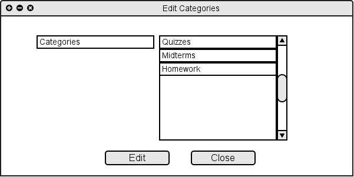
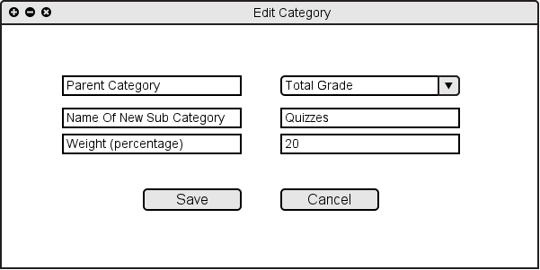

2.4.2 Edit Category
When the user chooses "Edit Categories" from "Assignments" menu or from "Assignemts/Categories...", the system shows Figure 2.4.2 A.

Figure 2.4.2 A: Editing Categories
After the user chooses a category and clicks on the "Edit", the system shows Figure 2.4.2 B.

Figure 2.4.1 B: Editing Category Filled
Now the user is able to rename and/or change the weight of that specific category.
Figure 2.4.1 C: Editing Category Edited
Prev: Add Category
| Next: Delete Categories
| Up: Manage Assignments/Categories
| Top: index